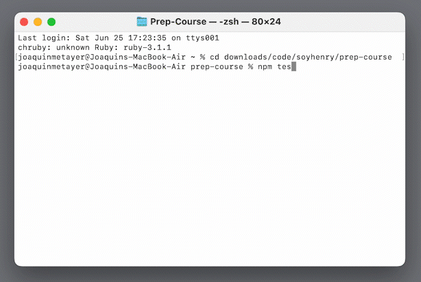

Soy Henry Prep-Course
A principios de junio de este 2022 me decidí emprender un cambio de carrera, agregar una habilidad mas con la que poder monetizar y crear une fuente de ingresos mediante la programación, mirando entre tantas opciones y formas en la que desarrollarme como programador me decidí de ir por Soy Henry Bootcamp.
En que consiste Soy Henry Bootcamp?
Soy Henry Bootcamp como su nombre lo dice, bootcamp significa campamento, todos los campamentos se caracterizan por ensenarte en un periodo de tiempo corto pero intensivo las habilidades que el mismo propone, en este caso tenemos dos para elegir: Data Science y Full Stack Developer.
En mi caso elijo Full Stack Developer que es en cuatro meses (si contar el tiempo que te demores en ingresar) en el que desarrollas las skills suficientes para salir al mercado laboral en el desarrollo full stack.
Antes de ingresar en el bootcamp debemos rendir un challenge el cual tenemos que prepararnos y dominar ciertos conceptos, a esta etapa la llamamos “Prep-Course”.
El mismo lo podemos rendir cada dos semanas las veces que nosotros querramos y tiene un costo, el cual pagas una vez te recibas y consigas un trabajo en blanco, actualmente este precio es de 4.000 dólares americanos, hay dos formas de pagarlo… también existe la opción de pagar una multa, pero no voy a adentrar en el tema ya que para eso esta la web.

Porque yo prefiero Soy Henry que hacerlo autodidacta?
Primero que nada por el apoyo que te dan en tu proceso, el poder consultar, debatir con compañeros que están estudiando lo mismo y realizar trabajos en grupo es algo que le doy importancia.
Todos sabemos ya que el contenido que uno aprende aquí puedes hacerlo también de forma autodidacta, pero el tiempo que uno invierte en encontrar el buen contenido o lograr entender algunos conceptos conlleva una inversion mayor de tiempo en cierta medida… ni hablar si no eres disciplinado con tus hábitos de estudio!
Por eso prefiero tener una estructura en donde tener horarios y conectarme con profesores y hacer entregas y realizar trabajo en equipo. Quizás para muchos el precio de esto puede ser elevado… pero si lo piensas por el lado de que en un periodo de seis meses ya puedes estar dentro de tu primer trabajo como desarrollador y que en cuatro meses de sueldo cubres la inversion que hiciste en el bootcamp… tiene su beneficio!
Piensa en si estudiaste alguna carrera anteriormente, cuanto tiempo te demoraste en salir al mercado laboral? Cuanto invertiste en aprender teniendo en cuenta tu tiempo (que es lo mas valioso) y todo el dinero que conllevó realizar esa carera? Piénsalo.
Prep-Couse
El ingreso consiste principalmente en JavaScript, conceptos básicos de la lógica de este idioma. Como agregado pero NO necesario se agrega el contenido de HTML y CSS, pero esta mas que claro que tarde o temprano deberas saber dominar estos dos últimos, aunque vale saber que para el prep course no se necesitara directamente saber estos dos idiomas.
Cada tema tiene su teoría y al final un homework en donde codeas dentro de un documento ( JS / HTML / CSS dependiendo del tema) en el repositorio que uno clona en su computadora y ejecuta los test como le dicen en donde verificamos si estamos haciendo las cosas bien o no, lo considero una forma rápida y efectiva de comprobar que lo que estamos haciendo esta mal o bien y corroborar en que nos hemos equivocado.
Un test se ve así:

La forma en que lleve todo para rendir el challenge
En mis primeras vistas del contenido, como siempre que vemos un tema nuevo y as si no has visto nada de programación, se me hizo difícil de entender y abrumador por tanta información. Pero todo porque no entendía muy bien cómo estudiarlo, en que orden y cómo acordarme de la lógica y de los conceptos que estaba viendo.
Lo principal y que seguro ya lo habrás escuchado es… Aprender a programar se aprende programando.
Y nada mas que la verdad, trata de llevar r en notas de texto o en un documento del lenguaje que estes viendo (ejemplo, si vemos HTML escribe todo en un doc con la extensión .html).
Con lo anterior es donde cree una carpeta en mi repositorio de GitHub que puedes verla aquí dividiéndolo en dos tipos de archivos… uno de texto en donde anotaba todo en forma de resumen del contenido, escribiendo hasta el código de ejemplo sin importar que no lo pueda ejecutar o ver de una forma en que entienda mejor con colores ya que así interiorizo mas esos elementos que componen aquello, ejemplo escribir todo un bucle for; en otro archivo con extension del lenguaje que corresponda donde copio los homework’s que he resuelto pero que necesito reforzar y también el contenido de ejemplo que dan.
Ahora, como lo gestiono con el tiempo?
Esto dependerá de tus horarios, pero yo hasta que me logre dar cuenta de cómo llevarlo, veía un tema cada dos días, en uno la teoría y en el segundo el homework y el repaso.
Para mantenerme enfocado y no tomar recreos que se me hagan muy largos me instale en el navegador una extension de comodoro que me ayuda mucho al momento de estudiar o que necesito enfoque para hacer alguna tarea como la de escribir este articulo. Descarga la extension aqui, mi configuración es esta:

Mis notas de estudio se ven algo así:


Experiencia al rendir y pasar el challenge
Mi experiencia fue positiva, consiste en clonar un repositorio en local y resolver unos ejercicios (todos de JavaScript) que soy muy similares a los del homework pero uniendo varios conceptos de los que vimos. Resolviendo los ejercicios dados ejecutando los “npm test” para ayudarnos a saber si estamos en lo correcto o no con el ejercicio, una vez que creemos que terminamos con el examen le damos al comando git push para enviarlo.
.jpeg)
Y ahora ya adentro del bootcamp, que sigue? Mantente al pendiente de los postes y veras mi progreso!